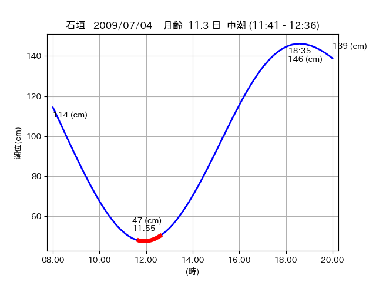

<!DOCTYPE html>
<html>
<head>
    
    <meta http-equiv="content-type" content="text/html; charset=UTF-8" />
    
        <script>
            L_NO_TOUCH = false;
            L_DISABLE_3D = false;
        </script>
    
    <style>html, body {width: 100%;height: 100%;margin: 0;padding: 0;}</style>
    <style>#map {position:absolute;top:0;bottom:0;right:0;left:0;}</style>
    <script src="https://cdn.jsdelivr.net/npm/leaflet@1.9.3/dist/leaflet.js"></script>
    <script src="https://code.jquery.com/jquery-3.7.1.min.js"></script>
    <script src="https://cdn.jsdelivr.net/npm/bootstrap@5.2.2/dist/js/bootstrap.bundle.min.js"></script>
    <script src="https://cdnjs.cloudflare.com/ajax/libs/Leaflet.awesome-markers/2.0.2/leaflet.awesome-markers.js"></script>
    <link rel="stylesheet" href="https://cdn.jsdelivr.net/npm/leaflet@1.9.3/dist/leaflet.css"/>
    <link rel="stylesheet" href="https://cdn.jsdelivr.net/npm/bootstrap@5.2.2/dist/css/bootstrap.min.css"/>
    <link rel="stylesheet" href="https://netdna.bootstrapcdn.com/bootstrap/3.0.0/css/bootstrap-glyphicons.css"/>
    <link rel="stylesheet" href="https://cdn.jsdelivr.net/npm/@fortawesome/fontawesome-free@6.2.0/css/all.min.css"/>
    <link rel="stylesheet" href="https://cdnjs.cloudflare.com/ajax/libs/Leaflet.awesome-markers/2.0.2/leaflet.awesome-markers.css"/>
    <link rel="stylesheet" href="https://cdn.jsdelivr.net/gh/python-visualization/folium/folium/templates/leaflet.awesome.rotate.min.css"/>
    
            <meta name="viewport" content="width=device-width,
                initial-scale=1.0, maximum-scale=1.0, user-scalable=no" />
            <style>
                #map_d22938aba076e8e420d1de8153c6375c {
                    position: relative;
                    width: 2048.0px;
                    height: 1600.0px;
                    left: 0.0%;
                    top: 0.0%;
                }
                .leaflet-container { font-size: 1rem; }
            </style>
        
</head>
<body>
    
    
            <div class="folium-map" id="map_d22938aba076e8e420d1de8153c6375c" ></div>
        
</body>
<script>
    
    
            var map_d22938aba076e8e420d1de8153c6375c = L.map(
                "map_d22938aba076e8e420d1de8153c6375c",
                {
                    center: [24.467, 123.839],
                    crs: L.CRS.EPSG3857,
                    ...{
  "zoom": 12,
  "zoomControl": true,
  "preferCanvas": false,
}

                }
            );

            

        
    
            var tile_layer_a1d53ca37abf61d9296f35e7d396ac1c = L.tileLayer(
                "https://cyberjapandata.gsi.go.jp/xyz/seamlessphoto/{z}/{x}/{y}.jpg",
                {
  "minZoom": 0,
  "maxZoom": 18,
  "maxNativeZoom": 18,
  "noWrap": false,
  "attribution": "\u5730\u7406\u9662\u5730\u56f3",
  "subdomains": "abc",
  "detectRetina": false,
  "tms": false,
  "opacity": 1,
}

            );
        
    
            tile_layer_a1d53ca37abf61d9296f35e7d396ac1c.addTo(map_d22938aba076e8e420d1de8153c6375c);
        
    
            var marker_82b2d7d9ec63aecaaf25e82c90665601 = L.marker(
                [24.4635, 123.841],
                {
}
            ).addTo(map_d22938aba076e8e420d1de8153c6375c);
        
    
            var icon_de8020705f39fc5b15f8d87242b093eb = L.AwesomeMarkers.icon(
                {
  "markerColor": "blue",
  "iconColor": "white",
  "icon": "info-sign",
  "prefix": "glyphicon",
  "extraClasses": "fa-rotate-0",
}
            );
        
    
        var popup_134e3374aab19d98c7f63fd37ee8226d = L.popup({
  "maxWidth": "100%",
});

        
            
                var html_93e49342be02517fd3d63a76ac7968a0 = $(`<div id="html_93e49342be02517fd3d63a76ac7968a0" style="width: 100.0%; height: 100.0%;"><table><tr><td></td></tr><tr><td><center>20090704 No.1 </center></table></td></tr></table</div>`)[0];
                popup_134e3374aab19d98c7f63fd37ee8226d.setContent(html_93e49342be02517fd3d63a76ac7968a0);
            
        

        marker_82b2d7d9ec63aecaaf25e82c90665601.bindPopup(popup_134e3374aab19d98c7f63fd37ee8226d)
        ;

        
    
    
                marker_82b2d7d9ec63aecaaf25e82c90665601.setIcon(icon_de8020705f39fc5b15f8d87242b093eb);
            
    
            var marker_6d6b0605a2f4653700c9a7971d2b7a70 = L.marker(
                [24.4635, 123.841],
                {
}
            ).addTo(map_d22938aba076e8e420d1de8153c6375c);
        
    
            var icon_dddcb9ca6481bbd9b3a1550a4d215e98 = L.AwesomeMarkers.icon(
                {
  "markerColor": "orange",
  "iconColor": "white",
  "icon": "info-sign",
  "prefix": "glyphicon",
  "extraClasses": "fa-rotate-0",
}
            );
        
    
        var popup_6f7f386191f464bf67db40ee67d4560d = L.popup({
  "maxWidth": "100%",
});

        
            
                var html_3e671cf6903053099c9686c9ff278d4b = $(`<div id="html_3e671cf6903053099c9686c9ff278d4b" style="width: 100.0%; height: 100.0%;"><table><tr><td></td></tr><tr><td><center>20090704 No.2 </center></table></td></tr></table</div>`)[0];
                popup_6f7f386191f464bf67db40ee67d4560d.setContent(html_3e671cf6903053099c9686c9ff278d4b);
            
        

        marker_6d6b0605a2f4653700c9a7971d2b7a70.bindPopup(popup_6f7f386191f464bf67db40ee67d4560d)
        ;

        
    
    
                marker_6d6b0605a2f4653700c9a7971d2b7a70.setIcon(icon_dddcb9ca6481bbd9b3a1550a4d215e98);
            
    
            var poly_line_b0772cfaa75cb6e4657dfa70a42ada6b = L.polyline(
                [[24.4635, 123.841], [24.4697, 123.8377]],
                {"bubblingMouseEvents": true, "color": "#FF00FF", "dashArray": null, "dashOffset": null, "fill": false, "fillColor": "#FF00FF", "fillOpacity": 0.2, "fillRule": "evenodd", "lineCap": "round", "lineJoin": "round", "noClip": false, "opacity": 1.0, "smoothFactor": 1.0, "stroke": true, "weight": 3}
            ).addTo(map_d22938aba076e8e420d1de8153c6375c);
        
</script>
</html>